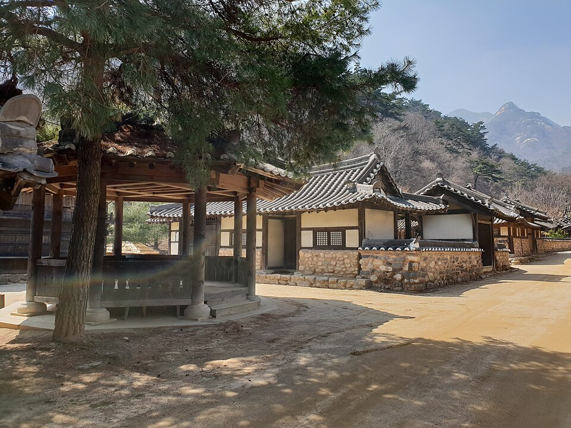

지역·대상별
문경 검정고시 — 일하면서 준비하는 직장인·성인 맞춤 계획

“일 끝나고 오면 너무 피곤한데, 공부가 될까요?” 문경 검정고시 과외를 문의하시는 직장인·성인분들이 가장 먼저 하시는 걱정이에요. 결론부터 말하면 하루 공부 시간을 길게 잡는 것보다, 짧아도 끊기지 않게 잡는 것이 훨씬 중요합니다. 일하면서 합격까지 가는 방법을 정리했어요.
1. ‘하루 몇 시간’보다 ‘일주일 몇 번’
퇴근 후 3시간씩 공부하겠다는 계획은 대부분 일주일을 못 가요. 대신 평일 30분~1시간 + 주말 한 번 길게처럼 지킬 수 있는 만큼만 정하는 게 좋습니다. 교대 근무나 야근이 잦다면 요일을 고정하지 말고 “이번 주 몇 번”으로 세는 방식이 오래 갑니다.
2. 과목 순서를 정하면 부담이 줄어든다
- 사회·한국사·도덕 같은 이해·암기 과목은 짧은 시간에도 진도가 나가요. 출퇴근·점심시간 복습에 잘 맞습니다.
- 수학·영어는 머리가 맑을 때 필요한 과목이라, 주말이나 쉬는 날에 배치합니다.
- 과목 합격제를 활용해 한 번에 전 과목이 어렵다면 이번 회차·다음 회차로 나눠 준비할 수도 있어요.
3. 오래 쉬었어도 기초부터 다시 하면 된다
학교를 떠난 지 오래됐다면 “중학교 내용도 기억이 안 난다”는 게 당연해요. 검정고시는 평균 60점이 합격선이라, 어려운 문제를 다 풀 필요가 없습니다. 교과서 수준 기본 개념과 기출 반복만으로 충분히 목표에 닿을 수 있어요.
직장인 검정고시의 핵심은 “멈추지 않는 것”. 바쁜 주에는 10분만이라도 이어가면, 흐름이 끊겨 처음부터 다시 시작하는 일을 막을 수 있어요.
문경에서 일하며 준비하는 분, 이렇게 돕습니다
‘문경 검정고시 학원’은 정해진 시간에 가야 해서 근무 일정과 맞추기 어렵다는 분이 많아요. 1:1 과외는 근무표에 맞춰 수업 시간을 정하고, 바쁜 달에는 분량을 줄였다가 여유 있을 때 늘리는 식으로 조절합니다. 문경 어디서든 방문 수업, 이동이 어렵다면 화상(줌) 수업도 가능해요. 시험 일정은 뉴스 첫 화면의 일정 안내를 확인해 주세요.
근무 시간과 쉬는 요일만 알려주세요. 무료 상담에서 문경 검정고시 합격까지 무리 없는 주간 계획을 함께 짜 드립니다.